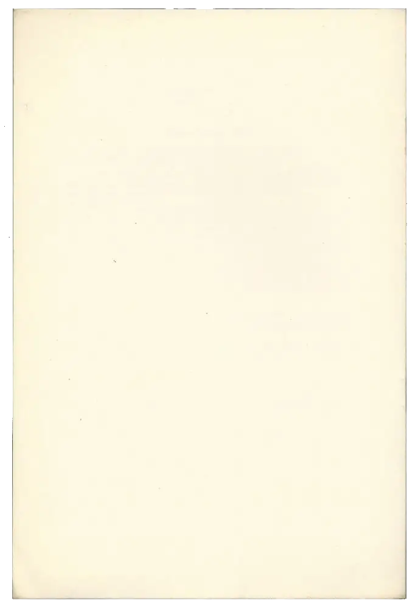
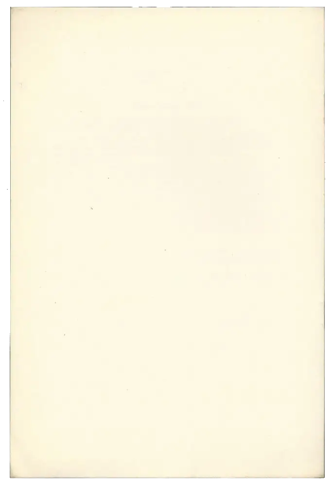

PRIVATE LIFE
Lives in Fulham with partner. Works in local Primary school. Is playing Disco Elysium. Other Hobbies known to include:
- History: currently reading about the history of oil in the 20th Century
- Cycling: rides handsome Red Pinarello Asolo
- Cooking: Italian and Japanese cuisine
- Drawing: uses oil pastels for their texture
- Cinema: loves italian neorealists